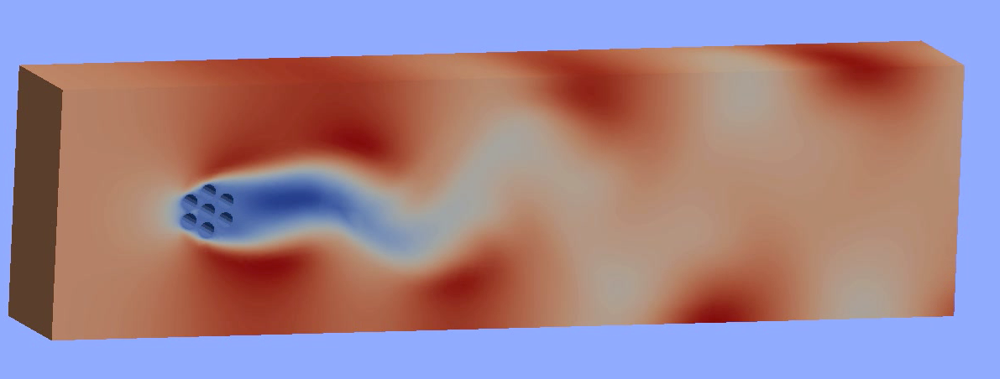

Albany
Albany is an implicit, unstructured grid, finite element code for the solution and analysis of multiphysics problems. The Albany repository on the GitHub site contains hundreds of regression tests and examples that demonstrate the code's capabilities on a wide variety of problems including fluid mechanics, solid mechanics (elasticity and plasticity), ice-sheet flow, quantum device modeling, and many other applications.
More details on the capabilities of Albany are available on the Albany Wiki
Features
Analysis of complex multiphysics problems

Illustration of a von Karman vortex street that forms around a heated tube bundle under certain conditions
Software architecture
Albany heavily leverages the Trilinos Framework, available at:
git clone https://github.com/trilinos/Trilinos.git
and optionally depends on the SCOREC Parallel Unstructured Mesh Infrastructure http://www.scorec.rpi.edu/pumi
Albany supports the solution of very large problems (those over 2.1 billion degrees of freedom) using MPI, and also demonstrates the use of the Kokkos hardware abstraction package to support generic manycore computing across a variety of platforms - MPI + [threads, OpenMP, Cuda, Intel MIC].
In addition to supporting embedded sensitivity analysis and uncertainty quantification, Albany can be tightly-coupled to Dakota using the Trilinos TriKota package.
The SCOREC tools are on GitHub at:
http://github.com/SCOREC/coreThe SCOREC repo can be cloned using:
git clone https://github.com/SCOREC/core.git
Building Albany
Detailed build instructions for both Trilinos and Albany are maintained on the Albany wiki at https://github.com/gahansen/Albany/wiki/Building-Albany-and-supporting-tools
Other build instructions for both Trilinos and Albany are maintained at http://redmine.scorec.rpi.edu/projects/albany-rpi/wiki, which includes instructions for building on the IBM BG/Q
Nightly Build and Test Results
Ths nightly build results for the Trilinos and SCOREC libraries along with Albany and the status of the Albany regression tests are posted on the Albany CDash site at http://my.cdash.org/index.php?project=Albany
The regression test suite is contained within the Albany repository in the directory:
/examples
These tests are stand-alone and also serve as nice examples about how to describe various multiphysics problems. They also serve as a template for developing new simulations.
Once Albany is built, the default test suite is executed by typing ctest within the build directory. Any individual test/example can be executed by changing directories to the desired example, and executing ctest in the example directory. The vast majority of Albany tests run in parallel using MPI.